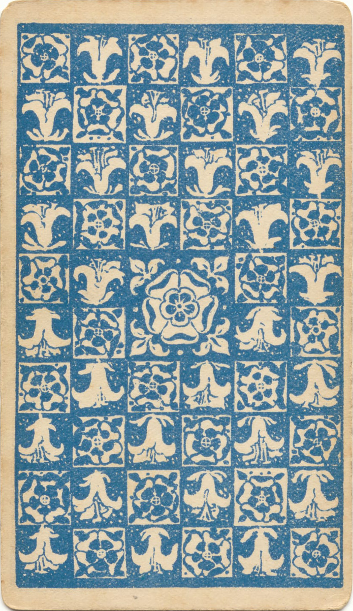

A Game of Survival, Resistance, and Feminist History
Europe, 15th-17th centuries. The world is changing rapidly. Old ways of life are being destroyed as capitalism takes hold. Commons are being enclosed. Women are losing their economic independence.
But the most dangerous change is yet to come: the witch hunts.
You are a woman with knowledge, skills, or independence that threatens the new social order. Your very existence is becoming suspicious...
The Historical Context
The witch hunts were not about superstition. As feminist historian Silvia Federici argues in "Caliban and the Witch," they were a systematic attack on women's autonomy during the rise of capitalism.
Why Women Were Targeted:
Economic Independence: Women who lived alone, had their own income, or controlled property
Traditional Knowledge: Healers, midwives, and herbalists whose skills challenged emerging male-dominated medicine
Resistance to Change: Those who opposed new laws restricting women's behavior and mobility
Control of Reproduction: Women who knew about contraception, abortion, or childbirth
"The witch hunt was a war against women; it was a coordinated effort to degrade them, demonize them, and destroy their social power." - Silvia Federici
Who Are You?
Each woman faced different challenges and had different resources for survival:
Caliban's Daughters
How to Play
Each Round: You'll draw a tarot card representing a situation or challenge based on historical events during the witch hunts.
Your Choices: Each card offers two options - often a choice between safety and resistance, or between individual survival and helping others.
Consequences: Your choices affect your Suspicion Level and number of Allies. Both are crucial for survival.
Theoretical Foundation
This game is based on Silvia Federici's analysis in "Caliban and the Witch." You'll experience how the witch hunts functioned as a tool of primitive accumulation, destroying women's autonomy to enforce capitalist and patriarchal control.
Caliban's Daughters
Suspicion: 0%
Allies: 0
Round: 1/10
Ready to Begin

Your story as a woman during the witch hunts is about to unfold...
Each card you draw will present you with a choice that could mean survival or danger.